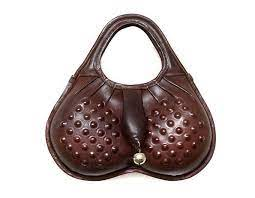
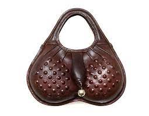

The scrotum or scrotal sac is an anatomical male reproductive structure located at the base of the penis that consists of a suspended dual-chambered sac of skin and smooth muscle. It is present in most terrestrial male mammals. The scrotum contains the external spermatic fascia, testes, epididymis, and ductus deferens. It is a distention of the perineum and carries some abdominal tissues into its cavity including the testicular artery, testicular vein, and pampiniform plexus.